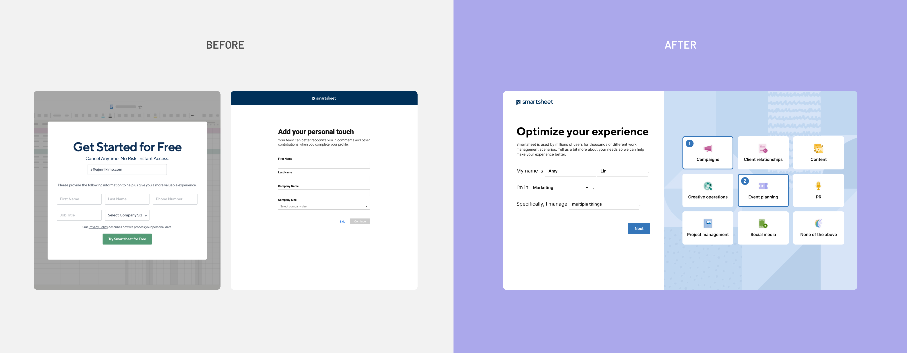
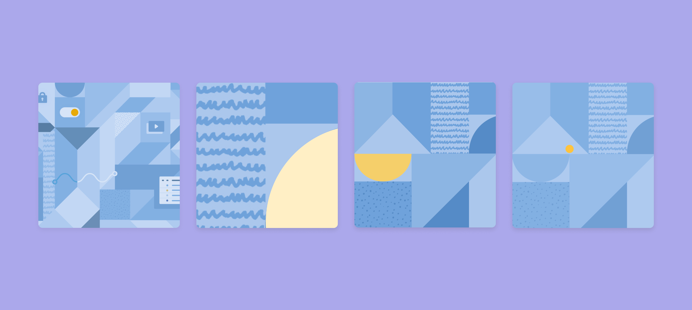

Trial User Onboarding
@ Smartsheet
Scale growth through user data collection

Smarthseet is a highly flexible yet powerful SaaS product for project management. However, despite numerous A/B testing in the existing onboarding flow. It had failed to drive users through the trial onboarding funnel, especially in the SMB sector. To increase conversion, the Growth team at Smartsheet decided to capture user intent to support a more personalized onboarding experience, which eventually led to 1.1% existing onboarding wizard opt-in, 0.8% increase in onboarding completion and 3.5% in-app template downloads with 92% completion rate on the user data collection page to date.
Smartsheet attracts 10K+ of trial users on a monthly basis. Smartsheet believes all trial users come to Smartsheet hoping to find a solution that suits their needs. However, Smartsheet supports more than 100+ use cases. The team believes offering personalized experience based on what trial users are looking for will improve the dropoff in the onboarding flow.
Through concept testing and quantitative data, the Growth team believes providing more personalized onboarding experience through data collection will increase onboarding metrics and trial conversion rate. However, with increasing instances of user data breaches, most users are conscious of giving out their personal information to companies when they are starting a trial. Therefore, making sure the data collection page doesn’t discourage users from giving up at the very first step is detrimental to the success of the project.
I came up with the following 4 guiding principles to make sure my design serves the business needs while making sure data collection doesn’t steer users away from trying out and learning more about Smartsheet.
The new user data collection page features prompts that aim to capture trial users' work and how Smartsheet can support their work streams. In the new design, we minimized the traditional form style design on the marketing website and introduced a new user intent page design that sparks joy with natural conversations and modern illustrations. The goal is to reduce impatience triggered by the long haul of filling out forms, strengthen Smartsheet’s image as a powerful modern solution and trigger users’ level of excitement of moving down the trial onboarding experience.

I worked closely with my PMs, UX research and writing teams on multiple rounds of testing and research to make sure we capture accurate data in a delightful way. Each round of testing and research took 1-2 weeks with 10 participants in the US.
Something that surprised the team during the user testing session was that multiple participants mentioned the background illustration looks like a face, which made them feel spied on. I shared user concerns of the illustration with the brand team and provided art direction on the refinement of background illustration as well as the final touches of icons.
Based on the previous round of insight, the team gained some confidence in moving forward with the horizontal layout. Nonetheless, in a design review, the product team was concerned about the extra click to show the user intent options could add friction to the data collection process.
The added friction was an intentional design decision I made to help information more digetable. Therefore, I conducted another round of testing to see if reducing frictions had an impact on user comprehsion. As it turned out, without a user-triggered disclosure, participants are not able to make the connection intuitively when options are shown in a horizontal layout.

The use of mad-lib pattern and tiles for showing different options is new to Smartsheet's design library -- The team couldn't agree on where the options should appear on the screen after users click on the mad-lib style field. Therefore, we brought them to test with the following insights:
While the data collection page is a standalone step as part of the trial onboarding process, to ensure a consistent experience, the Growth team collaborate with the Marketing team and Demand Generation team to learn about how Smartsheet trial users discover Smartsheet and how that affects the landing experience on the marketing website and the subsequent experience once they land inside the product.
In auditing existing trial signup forms on the marketing website, the team found out some issue with the existing data collection approach –
When thinking about what types of data to collect, I worked with marketing managers on the compete team on a comparative analysis to look into data collected as part of the trial onboarding process in other competitor products and how that affects the personalized experience they offer as part of trial onboarding. Some common data collected are as follows --
While the addition of the user intent page in the trial onboarding flow didn't help with trial conversion nor other engagement metrics such as create, edit and share. However, it laid the foundational work for long-term product-led growth opportunities.
From a data collection's perspective, the page has consistently maintained a high completion rate at 92.74% since launched in Sept 2022. Moreover, the customized journey based on users' response on the user intent page, it leads to 3.5% increase in template downloads, 1.1% increase in opt-in for onboarding guided walkthrough as well as 0.8% increase in guided walkthrough completion rate pre- vs post-launch.
In order to launch the user data collection page during Engage, Smartsheet’s annual conference, the team had cut the personalized experience during onboarding out of scope but route users to the in-app template gallery as a workaround, which the Growth team believe to be the reason for no change in the conversion rate despite increase in key engagement metrics. However, the result sheds lights on the poor usability of the old template gallery, which has become a key investment area in FY24.